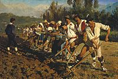

Етика Відносин "Людина-природа" в традиційному суспільстві
 Ілон Рів Маск; нар. 28 червня 1971, Преторія, ПАР — інженер, підприємець, винахідник, інвестор, мільярдер. Засновник компаній SpaceX, PayPal, Neuralink і The Boring Company, головний дизайнер, генеральний директор і голова ради директорів Tesla Inc., що керує заводом Tesla.
Ілон Рів Маск; нар. 28 червня 1971, Преторія, ПАР — інженер, підприємець, винахідник, інвестор, мільярдер. Засновник компаній SpaceX, PayPal, Neuralink і The Boring Company, головний дизайнер, генеральний директор і голова ради директорів Tesla Inc., що керує заводом Tesla.Етика Відносин "Людина-природа" в Індустріальному суспільстві

Індустріальному суспільству властиве машинне виробництво, національна система господарювання, вільний ринок. Цей тип суспільства виник порівняно недавно — починаючи з ХVIII ст., внаслідок промислової революції, що охопила спершу Англію і Голландію, а згодом і решту країн світу. В Україні промислова революція почалася приблизно у середині XIX ст.
 Ні́кола Те́сла — сербський та американський винахідник і фізик. Походив із сербської сім'ї, згодом став громадянином США. Тесла найбільш відомий своїми винаходами у галузі електрики, магнетизму та електротехніки. Зокрема йому належать винаходи змінного струму, поліфазової системи та електродвигуна зі змінним струмом.
Ні́кола Те́сла — сербський та американський винахідник і фізик. Походив із сербської сім'ї, згодом став громадянином США. Тесла найбільш відомий своїми винаходами у галузі електрики, магнетизму та електротехніки. Зокрема йому належать винаходи змінного струму, поліфазової системи та електродвигуна зі змінним струмом.Етика Відносин "Людина-природа" в інформаційному суспільстві
 Володи́мир Іва́нович Верна́дський — російський, український та радянський науковець і філософ. Природознавець, засновник геохімії, біогеохімії та радіогеології, вчення про біосферу, ноосферу, космізм. Академік Імператорської Академії наук. Професор Московського університету.
Володи́мир Іва́нович Верна́дський — російський, український та радянський науковець і філософ. Природознавець, засновник геохімії, біогеохімії та радіогеології, вчення про біосферу, ноосферу, космізм. Академік Імператорської Академії наук. Професор Московського університету.